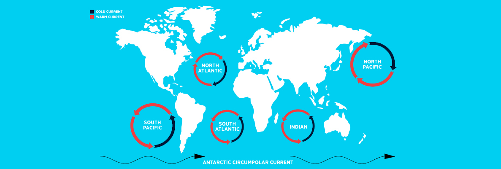

Gyres:
Formation
Formation
- Earth’s Rotation causes Coriolis Effect which deflects moving air to the right in N. Hemisphere and to the left on S. Hemisphere: Surface Westerlies & Trade winds
- Wind moves water at very surface due to friction,surface water moves slightly deeper water, etc.: Coriolis effect creates Ekman Transport
- Continents form East and West Boundaries
- Ekman Transport forms a high pressure dome
- Downslope Pressure from Dome + Ekman transport balance out at a 30–45° deflection of surface water, relative to wind direction: Gyre

Surface Current
Western Boundaries Current (Gulf Stream, Kuroshio)
- deep
- narrow
- strong current
- warm
- flow poleward
Eastern Boundaries Current (Canary, California)
- shallow
- broad
- weak current
- cold
- flow equatorward
- Productive